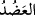
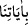
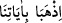
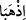
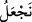
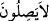

“__WORD__, dirsekle omuz arasına denir, yâni pazu anlamına gelir. Elin pazudan kuvvet
aldığı gibi, seni kardeşinle takviye edeceğiz. Çünkü insan, kardeşinden kuvvet alır ve
onunla güçlenir. Bu vakitte Hârûn (a.s.) Mısır’da idi.
“Ve size öyle bir kudret,” galebe ve üstünlük “vereceğiz ki,”
Ca’fer bu âyeti şöyle yorumlar: Size karşı, düşmanlarınızın kalblerine heybet ve
korku; dostlarınızın kalblerine de sevgi ve muhabbet koyacağız. İbn Atâ ise şöyle der:
Nübüvvet ahlâkı ile beraber hilâfet siyaseti (hüsn-i hal ile insanları idâre kabiliyeti)
vereceğiz.
“Âyetlerimiz (mucize yardımlarımız) sayesinde onlar” gerek istila ve gerekse
münakaşada “size erişemiyecekler” ve emellerine nâil olamayacaklar.
“__WORD__ (âyetlerimiz sayesinde)” ifâdesindeki harf-i cer, başka yerlerde de açıklandığı
gibi ya mahzûf bir fiile müteallıktır ki bu da “
(âyetlerimizle gidin)” (eş-Şuârâ,
/2615) deki “__WORD__ (ikiniz gidiniz)” fiilidir. Veya bir önceki “__WORD__ (vereceğiz)” fiiline
müteallıktır ki buna göre âyetin mânâsı; âyetlerimizle, yâni mûcîzelerle sizi onlara karşı
üstün getireceğiz, şeklindedir. Yahud da buradaki “__WORD__ (erişemeyecekler)” fiiline
müteallıktır. Bu durumda takdiri şöyle olur: Âyetlerimizle onlardan korunursunuz da sizi
öldürmeye veya size bir kötülük yapmaya muktedir olamazlar. Nitekim Fethu’r-
Rahman’da bu şekilde geçmiştir.
“Siz ve size tâbi olanlar” Firavun ve kavmine karşı galip ve “üstün geleceksiniz.”
Zira bizim âyetlerimizin sancakları yücedir ve evliyâya yardım ve iânemiz kesintisiz ve
aralıksızdır. Gâlib ve Müteâl Allah (c.c.)’dır.
Keşfü’l-esrâr’da denilir ki: Bu münâcât tamam olunca, âlemlerin Rabbi onu tekrar
kendi hâline döndürdü. Âlimler arasında, bu vâkıadan sonra Mûsâ (a.s.)ın âilesinin
yanına mı yoksa oradan Mısır’a, Firavun’un yanına mı gittiği hususunda ihtilaf vardır.
Bazılarına göre Mûsâ (a.s.) oradan Mısır’a gitti, eşi ve çocuklarını o çölde bıraktı. Otuz
gün Medyen ile Mısır arasındaki o çölde yalnız kaldılar. Kalanlar, Hz. Şuayb’ın kızı,
Mûsâ (a.s.)ın iki çocuğu ve koyunlar idi. Otuz gün sonra bir çoban onlara uğradı.
Şuayb’ın kızını görüp tanıdı; üzgün ve kederli bir halde oturmuş ağlıyordu. Çoban
onları yanına alıp Medyen’e, Şuayb’ın yanına götürdü.
Bazıları da şöyle dediler: Mûsâ (a.s.) münâcâtı tamamlayınca, o gece âilesinin ve
çocuklarının yanına gitti. Çocukları ona “Ateş getirdin mi?” diye sordular. Mûsâ (a.s.):
“Ben ateş bulmak için gittim, nur getirdim, peygamberlik ve Allah (c.c.)’ın mucizesini
getirdim” dedi. Sonra kalkıp Mısır’a yöneldiler. Mısır şehrinin kapısına vardıklarında
akşam olmuştu. Mûsâ (a.s.) eşini, çocuklarını ve koyunları Mısır’ın kapısında bıraktı.
Kendisi yalnız başına sanki bir çoban gibi Mısır’a girdi. Annesinin evine vardı. O
zaman annesi ile erkek ve kız kardeşi hayatta idi. Ancak babası dünyadan göçmüştü.
Mûsâ (a.s.) evin kapısına vardığında akşam namazı vakti idi. Onlar önlerine yemek
koymuş yiyorlardı. Mûsâ (a.s.) seslendi: “Ben bir yabancıyım, bu gece beni misafir
ediniz.” Annesi Harun’a şöyle dedi: Bu yabancıyı misafir etmek gerek. Belki birisi de